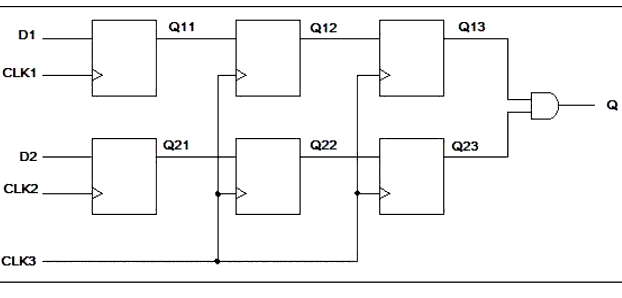

| Description | This rule fires when Leda detects signals derived from an asynchronous clock domain converging on a gate. One solution to this problem is to add synchronizers to such signals before they converge on a gate. You can configure this rule using rule_set_parameter Tcl commands to set the following parameters:
leda> rule_set_parameter -rule NTL_CLK23 \
-parameter SYNCHRONIZER_FF_NUMBER -value {8}
leda> rule_set_parameter -rule NTL_CLK23 \
-parameter PIPELINE_STAGE_NUMBER -value {8}
leda> rule_set_parameter -rule NTL_CLK23 \
-parameter SOURCE_CLOCK_DOMAIN_CHECK -value {0}
A valid synchronizing system is one in which the number of flip-flops used as synchronizers is greater than the SYNCHRONIZER_FF_NUMBER and the number of pipelines composed by synchronizers is greater than the PIPELINE_STAGE_MIN. If this is not the case, Leda flags errors on signals from multiple asynchronous clock domains converging on the gate. When SOURCE_CLOCK_DOMAIN_CHECK is set to "1" (default), Leda flags even if source clock domain is different. |
| Policy | DESIGN |
| Ruleset | CLOCKS |
| Language | VHDL/Verilog |
| Type | Hardware |
| Severity | Error |
This is an example of invalid Verilog code, followed by a circuit diagram that illustrates the problem:
module ntl_clk23_top (CLK1, CLK2, CLK3, D1, D2, Q); output Q; input CLK1, CLK2, CLK3, D1, D2; reg Q11, Q12, Q13; reg Q21, Q22, Q23; wire CON_POINT; // Source data from CLK1 always @ (posedge CLK1) Q11 <= D1; // Synchronizer of CLK1 domain always @ (posedge CLK3) begin Q12 <= Q11; Q13 <= Q12; end // Source data from CLK2 always @ (posedge CLK2) Q21 <= D2; // Synchronizer of CLK2 domain always @ (posedge CLK3) begin Q22 <= Q21; Q23 <= Q22; end // Convergent point assign Q = Q13 & Q23; // NTL_CKL23 fires -- converging on AND gate endmodule